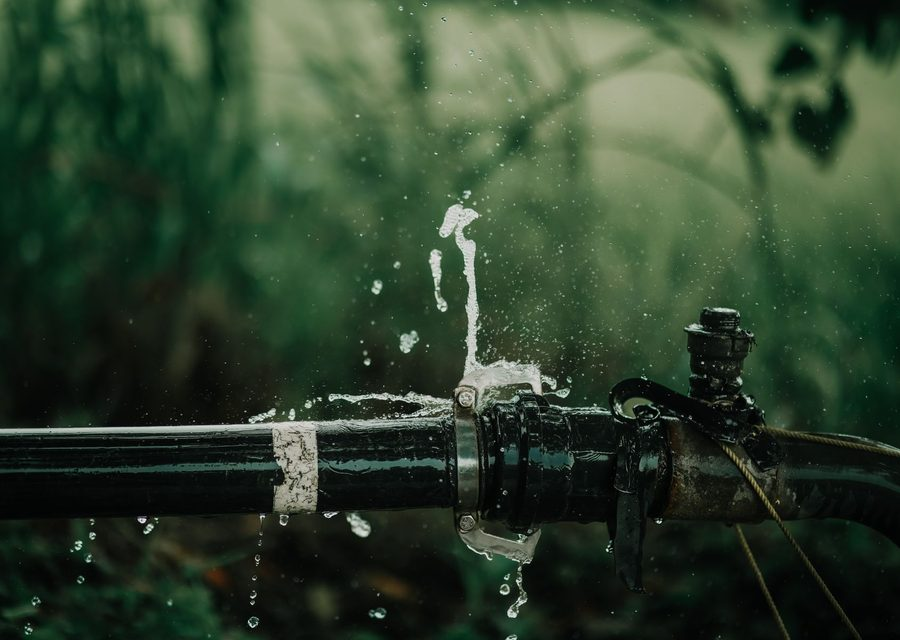
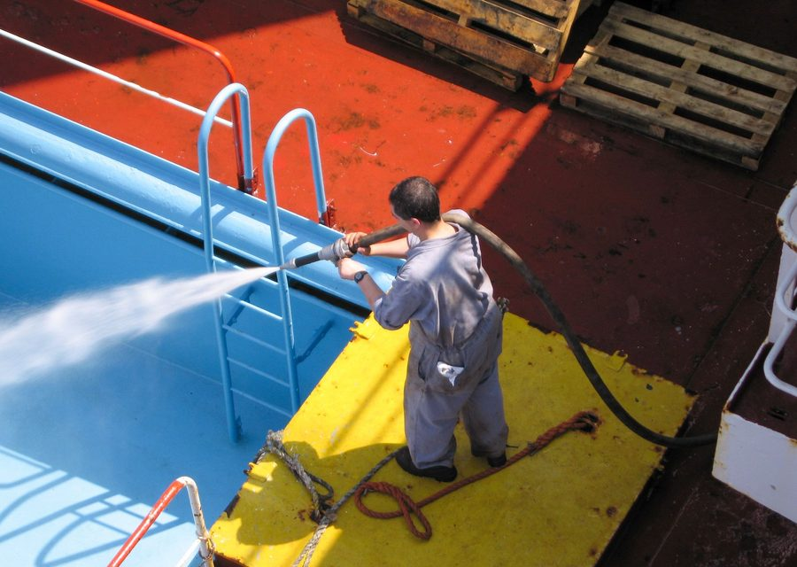
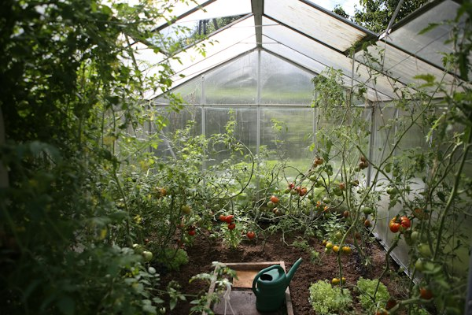
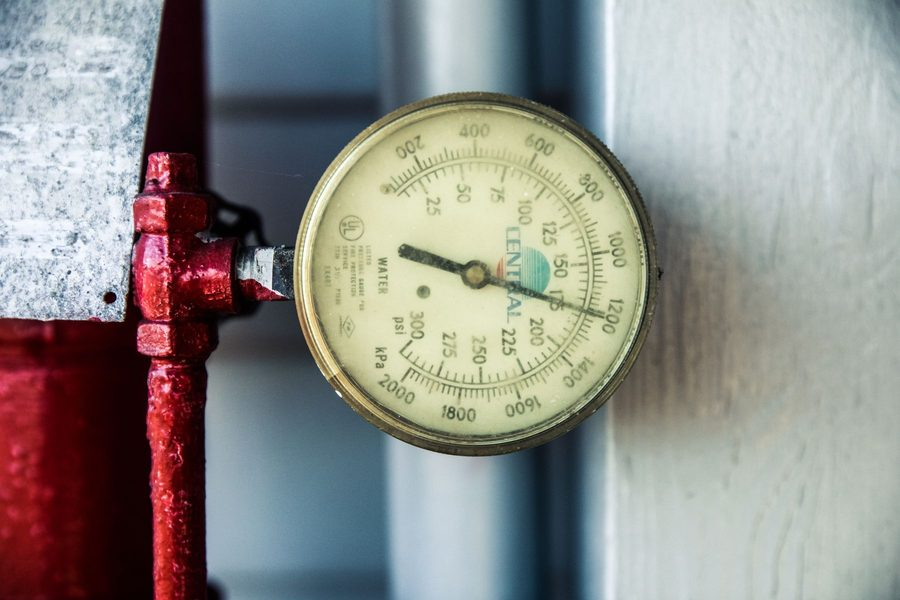

Modern Plumbing Diagnostics & Engineered Pipe Infrastructure
We employ non-invasive acoustic sensors, optical fiber scopes, and high-pressure jetting technology to pinpoint and eliminate plumbing failures without tearing apart your property.
Immediate emergency shutoff assistance, acoustic leak localization, and high-temp copper/PEX sectional pipe replacement.
Zero-Destruction Diagnostic Equipment
Rather than knocking through walls or excavating gardens to find leaks, our master technicians leverage cutting-edge electronic diagnostic tools.

Ultrasonic Acoustic Sensors
Picks up minute sound frequencies created by pressurized water escaping through hairline copper fractures beneath concrete slabs.
- • Accuracy within 2 inches
- • Sub-slab & drywall scanning
- • Zero wall demo required
4K Optical Sewer Scopes
High-definition, waterproof camera heads that travel up to 200 feet through sewer laterals to pinpoint clogs, bellied pipes, and roots.
- • 1080p color video recording
- • Real-time digital foot counter
- • Sonde depth tracking transmitter

4,000 PSI Hydro-Jetting
Rotary water nozzles that scour sewer walls clean of built-up grease, hardened mineral scale, and heavy root clusters.
- • 18 GPM high-velocity flow
- • Restores full pipe diameter
- • 100% eco-pure (zero chemicals)
Infrared Thermal Imagers
Detects micro-temperature variations caused by hot water line leaks or latent moisture pooling behind ceiling plaster.
- • FLIR high-resolution sensor
- • Moisture boundary mapping
- • Insurer-accepted audit reports
Residential Care vs. Commercial Infrastructure
Plumbing demands differ dramatically between a family residence and a multi-level commercial complex. Our specialized divisions cater to both.
Single-Family & Apartment Services
Tailored for homeowners, landlords, and condo residents. Focused on quiet operation, spotless site cleanliness, and fast same-day resolution.
-
✓
Bathroom & Kitchen Fixture Modernization
Installation of high-efficiency mixer taps, dual-flush toilets, and under-sink filtration.
-
✓
Domestic Water Storage Sanitization
Annual overhead tank silt extraction, UV disinfection, and booster pump tuning.
-
✓
Low Water Pressure Restoration
PRV regulator valve replacements and pipe descaling to deliver consistent shower pressure.
Enterprise & Facility Infrastructure
Engineered for restaurants, retail complexes, office towers, and medical clinics needing code compliance and minimal business downtime.
-
✓
Grease Interceptor & Vent Stack Maintenance
Scheduled hydro-flushing to maintain local municipal health and municipal sewer compliance.
-
✓
Certified Backflow Preventer Testing (RPZ)
Annual testing, repair, and state reporting for cross-connection safety valves.
-
✓
High-Volume Industrial Water Boilers & Pumps
Emergency rebuilds of multi-stage circulation pumps, pressure vessels, and steam piping.
HydroFix Maintenance Club Memberships
Prevent catastrophic water damages and extend the lifespan of your plumbing network with routine preventative audits and member discounts.
Home Shield
For single-family homes & duplexes
- ✓ 1 Comprehensive Annual Plumbing Audit
- ✓ 1 Water Heater Tank Flush & Anode Check
- ✓ 15% Discount on all repairs & parts
- ✓ $0 Diagnostic Fee on any callout
- ✓ Priority Booking over standard queue
Landlord Care
For property managers & multi-unit owners
- ✓ Bi-Annual Inspections across up to 4 units
- ✓ Annual Main Sewer Optical Camera Scan
- ✓ 20% Discount on all emergency repairs
- ✓ Direct Tenant Triage Dispatch line
- ✓ Detailed Insurer-Ready Compliance Records
Facility Pro
For restaurants, clinics & commercial centers
- ✓ Quarterly Backflow & Grease Line Inspections
- ✓ Guaranteed 30-Minute Emergency Dispatch SLA
- ✓ 25% Discount on all parts, pumps & valves
- ✓ Dedicated Lead Master Plumber account rep
- ✓ 24/7 Priority Emergency Access
Our Strategic Mobile Dispatch Depots
To guarantee our 45-minute arrival commitment, our fleet of fully outfitted mobile workshops is stationed across four strategically positioned metro hubs.
Central Depot
Downtown core, Financial District, and riverfront loft towers. 4 rapid service vans on duty.
North Suburban Hub
Highland Park, North Hills, and industrial business parks. 3 heavy hydro-jetting rigs stationed.
East Metro Station
University district, medical clinic corridors, and residential subdivisions. 4 response vans.
South County Depot
South Hills, commercial logistics centers, and residential estates. 3 mobile diagnostic units.
Smart Water Conservation & Micro-Leak Defense
Modernize your infrastructure to slash utility waste. Our engineered conservation retrofits protect both regional water tables and your monthly bills.
IoT Smart Flow Monitors
Whole-home ultrasonic sensors installed on your main supply line that track real-time consumption and automatically shut off water upon detecting micro-leaks.
High-Pressure Aerators
Engineered micro-bubble aerators that reduce water volume by up to 35% while amplifying spray velocity for kitchen and bath faucets.

Greywater Ready Retrofits
Dual-line diverter valves that route clean laundry rinse water to outdoor garden irrigation, reducing freshwater consumption during hot summer months.

Pressure Relief Tuning
Balancing household pressure down to an optimal 55 PSI, preventing premature toilet valve failure, burst washing machine hoses, and pipe strain.